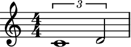
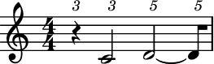

merge_partial_tuplets¶
- auxjad.mutate.merge_partial_tuplets(selection: abjad.select.Selection, *, merge_across_barlines: bool = False) → None[source]¶
Mutates an input
abjad.Selectionin place and has no return value; this function merges all consecutive partial tuplets with the same ratio and which sum up to an assignable duration. Partial tuplets can result from algorithmic manipulations such as phasing or looping, which can slice through a tuplet.- Basic usage:
Usage is simple:
>>> staff = abjad.Staff(r"\times 2/3 {c'1} \times 2/3 {d'2}") >>> abjad.show(staff)
>>> auxjad.mutate.merge_partial_tuplets(staff[:]) >>> abjad.show(staff)

Note
Auxjad automatically adds this function as an extension function to
abjad.mutate. It can thus be used from eitherauxjad.mutateorabjad.mutatenamespaces. Therefore, the two lines below are equivalent:>>> auxjad.mutate.merge_partial_tuplets(staff[:]) >>> abjad.mutate.merge_partial_tuplets(staff[:])
- Multiple consecutive partial tuplets:
This function can also handle several consecutive partial tuplets:
>>> staff = abjad.Staff( ... r"\times 2/3 {c'2} \times 2/3 {d'2} \times 2/3 {e'2}" ... ) >>> abjad.show(staff)

>>> auxjad.mutate.merge_partial_tuplets(staff[:]) >>> abjad.show(staff)

merge_across_barlines:By default, partial tuplets are not merged across barlines.
>>> staff = abjad.Staff(r"\time 3/4 c'2. " ... r"\times 2/3 {d'4} r4 \times 2/3 {e'2} " ... r"\times 2/3 {f'4} r4 \times 2/3 {g'2}") >>> auxjad.mutate.merge_partial_tuplets(staff[:]) >>> abjad.show(staff)

To change this behaviour, set
merge_across_barlinestoTrue.>>> staff = abjad.Staff(r"\time 3/4 c'2. " ... r"\times 2/3 {d'4} r4 \times 2/3 {e'2} " ... r"\times 2/3 {f'4} r4 \times 2/3 {g'2}") >>> auxjad.mutate.merge_partial_tuplets( ... staff[:], ... merge_across_barlines=True, ... ) >>> abjad.show(staff)

- Tied partial tuplets:
Tied partial tuplets are also handled by this function.
>>> staff = abjad.Staff(r"\times 2/3 {r4} \times 2/3 {c'2} " ... r"\times 4/5 {d'2~} \times 4/5{d'8}") >>> abjad.show(staff)
>>> auxjad.mutate.merge_partial_tuplets(staff[:]) >>> abjad.show(staff)
- Indicators:
Indicators stay the same in the merged tuplet.
>>> staff = abjad.Staff( ... r"\times 2/3 {c'2\p\< d'2} \times 2/3 {e'2\ff}" ... ) >>> abjad.show(staff)

>>> auxjad.mutate.merge_partial_tuplets(staff[:]) >>> abjad.show(staff)

Tip
The method
auxjad.mutate.extract_trivial_tuplets()can be used after merging partial tuplets to further clean the output. The methodauxjad.mutate.auto_rewrite_meter()can also be used for this purpose, as it will not only rewrite the metric notation of a staff but also apply bothauxjad.mutate.merge_partial_tuplets()andauxjad.mutate.extract_trivial_tuplets()to the output.Note
When using
abjad.Container’s, all time signatures in the output will be commented out with%%%.This is because Abjad only applies time signatures to containers that belong to aabjad.Staff. The present function works with eitherabjad.Containerandabjad.Staff.>>> container = abjad.Container(r"\time 3/4 c'4 d'4 e'4") >>> abjad.show(container)

>>> staff = abjad.Staff([container]) >>> abjad.show(container)

Warning
The input selection must be a contiguous logical voice. When dealing with a container with multiple subcontainers (e.g. a score containing multiple staves), the best approach is to cycle through these subcontainers, applying this function to them individually.